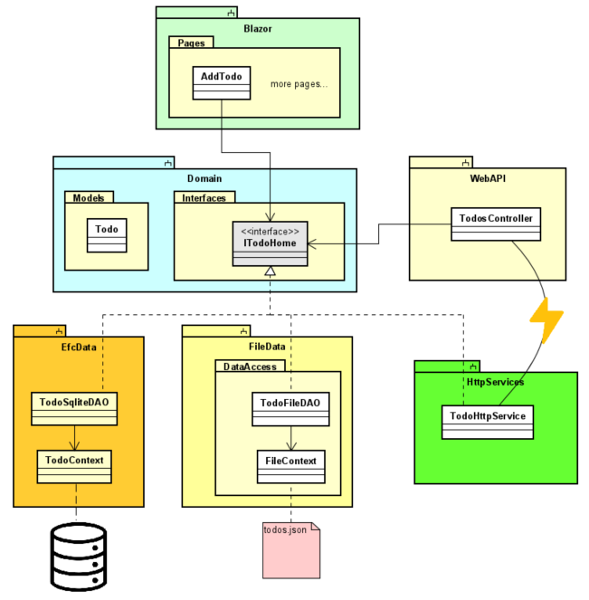
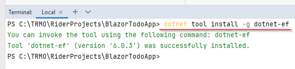
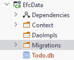
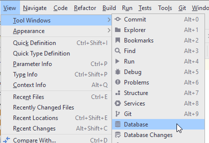
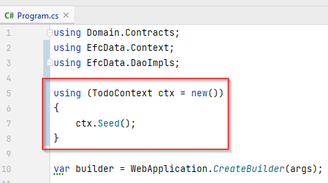

- 1 Introduction
- 2 New component
- 3 Adding dependencies
- 4 Installing db tools
- 5 DbContext
- 6 Generating a migration
- 7 Applying a migration
- 8 Inspecting the database
- 9 Todo DAO
- 10 Registering services
- 11 Seeding the database
- 12 Absolute path
- 13 First test
- 14 Get all
- 15 Add Todo
- 16 Update
- 17 Delete
- 18 Get by criteria
Introduction
In this tutorial we will add Entity Framework Core (henceforth "EFC") with SQLite as the data storage, instead of the json-file storage system currently in use.
Below is the layered diagram, you should be familiar with it by now.
To the left, is your current project. The right side version is the result of this tutorial

We will be working within the green box at the bottom, i.e. we are swapping out the data access layer.
Because of the IDAO interfaces (or whatever you've called them), we should not have to touch anything above.
The current data access is isolated in a component, and the new data access will be in another component. To keep things nicely organized.
Here's another rough overview:

The line-with-lightning between TodosController and TodoHttpService is to indicate networked communication between the two.
The result of this tutorial is found here on GitHub.
EFC Component
We are going to need a new component, it's a class library, you could call it EfcData.


The class library comes with a file, Class1.cs, or similar, just delete it.
Adding Dependencies
We are going to use Entity Framework Core and SQLite, so we are going to have to add some NuGet packages.
NuGet Manager
Open the NuGet package manager:
This should show a window in the bottom half of Rider.
Alternatively, there should be a NuGet button in the bottom row of Rider.
Packages
Once the window is open, you need to add 3 packages (see how further below):
- Microsoft.EntityFrameworkCore
- Microsoft.EntityFrameworkCore.Design
- Microsoft.EntityFrameworkCore.Sqlite
Notice the progress bar at the bottom after accepting installation.
Pick the latest version which matches your .NET version. E.g. if you're on .NET6, pick version 6.x.x.
Don't pick the preview versions.
For all packages, the version should be the same.
Verify
You should be able to verify the installed packages and versions:
Internal Dependency
We have added external packages. We also need new internal dependecies:
- EfcData -> Domain. This is so EfcData can use the ITodoHome interface, and the Todo model class.
- WebAPI -> EfcData. This is so WebAPI can register services from EfcData, and thereby use the database instead of file storage.
Installing Tools
You will need to install a command line interface tool, which is used when creating/updating the database.
Open the terminal in Rider:

In the terminal type (it shouldn't matter which directory, you're in):
dotnet tool install -g dotnet-ef

This will install the db tools. The -g means it is a global installation, so all future solutions should also have this tool installed.
Adding DbContext
In your new component, EfcData, add a new class. You could name it TodoContext.
This class will have a responsibility similar to your FileContext class, i.e. provide interaction with the data storage.
It must inherit from DbContext.
In this class you define DbSets for the object types, you want to be able to access in your database.
In this tutorial, we just have the Todo object, but you might also have a User object. If the project scaled up, we might have different TodoLists, owned by different Users. Maybe you'll add this later.
Specifying the Database
We need to specify which database to use. That's done in the inherited method OnConfiguring(...).
The class currently looks like this:
public class TodoContext : DbContext
{
public DbSet<Todo> Todos { get; set; }
protected override void OnConfiguring(DbContextOptionsBuilder optionsBuilder)
{
optionsBuilder.UseSqlite("Data Source = Todo.db");
}
}
The DbSet<Todo> represents the Todo table in the database. The DbSet looks a bit like the ICollection, with regards to available methods, which is why we have used ICollection a lot so far.
We interact with this DbSet to add, get, update, remove Todos from the database.
The OnConfiguring(...) method is here used to specify the database to be used. This is done with the method UseSqlite(...).
The argument is the name of the database: Todo.db.
Sqlite is just a single file, so that makes it easier to work with, instead of having to use Postgres or MySql or similar.
Note
The above method is a simple approach, however we have now hardcoded the database info, and it may not be easy to modify. Usually the connection info will go into a settings file, and the program will read from that. It is left to the reader to google how to do that, if they're interested.
Other database providers
If you wanted to use a different DBMS, e.g. Postgres, you would add a NuGet package for a Postgres driver. That would then include a method UsePostgres(...), in which you would provide connection arguments.
Configuring Todo table
Now, we wish to configure the Todo class a bit.
It currently has a couple of attributes on the properties, like [Range..] or [Required]. These are converted to constraints in the database, so that's a good start.
We need to define a Primary Key for the Todo table. This can be done in multiple ways:
- Have an
intproperty namedId, or[Class-name]Ide.g.TodoId. Such an attribute will automatically be made Primary Key - Add the
[Key]attribute to the existingIdproperty ofTodo. This is necessary if the property is named differently. It may also be necessary if the property is not an int. - We can configure a lot of things in the TodoContext class, i.e. outside of the Todo model class.
So which approach to use? It may not matter much, but you may also have preferences.
Personally, I don't like the automatic detection, i.e. just have a property called Id. It seems fragile.
So, at least add the [Key] attribute:
public class Todo
{
[Key]
public int Id { get; set; }
...
But, now we have added something to our Model class, which is only there, because we use EFC. We have added a dependency from the Domain layer to the Data layer. This may not be a good approach.
- It requires modifications of classes outside of the data access layer
- If you later wish to not use EFC, we must again modify classes outside the data access layer, i.e. the
[Key]attribute is no longer needed, and should be removed.
Adding [Key] is simple, and can be just fine.
Alternatively, we can set up the keys in the DbContext class:
On Model Creating
Inside your TodoContext, you can inherit a method, OnModelCreating. This method can be used to specify all kinds of things, e.g.
- primary keys
- foreign keys
- composite keys
- constraints
Add the following method:
protected override void OnModelCreating(ModelBuilder modelBuilder)
{
modelBuilder.Entity<Todo>().HasKey(todo => todo.Id);
}
This says that the Entity Todo has a Key, defined as the property Todo.Id.\
Extra note
Should we wish a composite key, i.e. a primary key consiting of more properties, we will have to use this approach.
As a simple example, we could do:
modelBuilder.Entity<Todo>().HasKey(todo => new {todo.Id, todo.Title});
Which will make a composite key of Id and Title from the todo.
Migrations
Migrations are updates to the database. The first migration will create the database, and sub-sequence migrations will modify it, either add to or remove from the struture.
A migration is generated based on the DbContext subclass, i.e. your TodoContext. When you create a migration, the database tool (installed in step 4) will look at the DbSets defined, as well as the OnModelCreating() method, and generate code, which will alter the database.
Along with the migration, a snapshot is maintained, which keeps track of which migrations have been applied to the database. When updating the database, un-applied migrations will be applied.
Creating a migration
A migration is created through the terminal (or command line interface).
Open the terminal.
Navigate to the EfcData project. Most likely when you open the terminal, it is located in the solution directory. You want to enter the EfcData directory:
cd EfcData
Once there, type in the following:
dotnet ef migrations add InitialCreate
The last part, InitialCreate, is the name for the migration we are about to create. You should generally call it something, which indicates what this migration does, e.g. UserEntityAdded or TodoEntityUpdated or something similar. Migrations are sort of a form of version control, similar to how you use Git.
Execute the above command.

Other commands
Notice how you are informed that you can remove the latest migration (if it hasn't been applied), with the command ef migrations remove.
If you have applied a migration, it can be rolled back. You'll have to google this, if/when you need it.
Migration Created
The first time a migration is created, a new directory will appear, "Migrations".

Each new migration will result in a new file, the name of which is a time-stamp and the name you provided.
You may open the file to inspect the result, but generally you don't need to touch these migration classes. For example, you can find a constraint, which indicates the primary key of the Todo table. You can also see constraints on the columns, provided by the attributes in the Todo class.
Notice also the TodoContextModelSnapshot.cs, which keeps track of which migrations have been added to the database. Currently that is none.
Deleting the Migrations
Sometimes, you may want a "hard reset", if you somehow mess up. You can delete the Migrations folder, along with the database file generated on the next slide, and start over.
Apply a Migration
The next step is to apply the migration to your database. Currently we have no database, so it will be created.
Again, in the terminal, and in the EfcData directory, we use the following command:
dotnet ef database update

In your EfcData project, you should now be able to see a new file, Todo.db, with a little database icon. If not, you may need to collapse and expand the EfcData project, i.e. click the little arrow next to the project. This will make it reload the content.

This Todo.db file is the Sqlite database. It's just a single file.
Inspecting the Database
Rider has a built-in mini-version of DataGrip. If you double click the Todo.db file, you should see a wizard for adding a database source.

You can test the connection, to make sure the information is correct 1. If this is your first time, you may not have the Sqlite drivers installed, and you should instead see a link to do so.
When clicking OK, it should open the Database window in Rider. This can also be found on the right side menu bar, or here:

In the Database window, you get something similar to DataGrip, where you can inspect your database:

You can also double click on tables, to see their content, if you want to verify changes made to the data in the tables.
Todo DAO
Now that we have the database access in place, i.e. the TodoContext and a generated database, we need to make it possible for your Todo app to use the database.
We need a new Data Access Object class. Currently, we are using TodoFileDAO.cs, from the FileData component.
We want to create an equivalent class, which just uses the TodoContext.
In the EfcData component, create a new class, 'TodoSqliteDAO'. It should implement the ITodoHome interface, from your Domain component.
The initial class looks like this:
public class TodoFileDAO : ITodoHome
{
private readonly TodoContext context;
public TodoFileDAO(TodoContext context)
{
this.context = context;
}
public Task<ICollection<Todo>> GetAsync()
{
throw new NotImplementedException();
}
public Task<Todo> GetByIdAsync(int id)
{
throw new NotImplementedException();
}
public Task<Todo> AddAsync(Todo todo)
{
throw new NotImplementedException();
}
public Task DeleteAsync(int id)
{
throw new NotImplementedException();
}
public Task UpdateAsync(Todo todo)
{
throw new NotImplementedException();
}
}
Changing the Added Services
We wish to be able to test this right away, even before starting implementation of the methods.
To do this, we need to change which implementation of ITodoHome is being used by the Web API. This is handled in WebAPI.Program.cs.
Currently, we have these two lines of code:
builder.Services.AddScoped<ITodoHome, TodoFileDAO>();
builder.Services.AddScoped<FileContext>();
But we need to change it to:
builder.Services.AddScoped<ITodoHome, TodoSqliteDAO>();
builder.Services.AddDbContext<TodoContext>();
So, the Web API still depends on the ITodoHome interface, but the implementation behind is now the TodoSqliteDAO.
We also need the TodoContext, but notice it is added as a service using a different method: AddDbContext.
Seeding
Currently we don't have any data to work with. So, similarly to the FileContext, we wish to seed the database with some dummy test data, if there is no data.
We add a seeding method to TodoContext, and call it from WebAPI.Program.cs.
Seed Method
In the TodoContext add the following method:
public void Seed()
{
if (Todos.Any()) return;
Todo[] ts =
{
new Todo(1, "Dishes"),
new Todo(1, "Walk the dog"),
new Todo(2, "Do DNP homework"),
new Todo(3, "Eat breakfast"),
new Todo(4, "Mow lawn"),
};
Todos.AddRange(ts);
SaveChanges();
}
If the Todos DbSet contains anything, we just return, i.e. do nothing.
Otherwise we create a list of Todo items, add them to the Todos DbSet and save the changes. The method AddRange(..) just takes some kind of collection, and adds all elements.
When calling SaveChanges(), whatever you've done to your DbSets, e.g. added, updated, removed, etc, those changes will be applied to the database, in one transaction.
So, it is a bit similar to what we have previously done with the FileContext::SaveChanges method, which also persisted changes made.
Seed the Db
In the Program class of WebAPI, we need to call the above method. It looks like this:

Here, we use a "using block", meaning that the ctx variable is disposed at the last " } ".
The first time we run the Web API, the database will be seeding. On subsequent runs, there is already data present, so nothing happens.
Absolute Path to .db
Run the WebAPI.
If you don't get errors, great. However:
Sometimes, you'll get an error with the message "no such table: Todos", or whatever table you're trying to interact with.
This is a poor way which SQLite tries to tell you the path to the .db file is not correct.
In the TodoContext::OnConfiguring, we just put: "Data Source = Todo.db".
That means the Todo.db is a relative path, and the file should be found relative to the project.
However, the project actually running is the WebAPI, not EfcData, and so it cannot find the Todo.db in the WebAPI project.
You can do one of two things:
- Copy the Todo.db file into the WebAPI project
- Update the path in TodoContext::OnConfiguring to an absolute path
I don't think the db file has anything to do with the Web API, so I'm not a fan of option (1).
Instead, I suggest you update the TodoContext::OnConfiguring to specify the absolute path to the file. An absolute path is from the drive root, e.g. c:\Users...
An easy way:
Notice in the end that I prefix the string for Data Source with @. This is to auto-escape backslashes. Alternatively, every backslash would need to be doubled: \\.
Testing the Seeding
Now, we have something we can test. Nothing in the DAO class works, the methods are not yet implemented, but we can run the Web API and manually verify that the database received the seeding data.
When you can run the Web API without errors:
- Run the Web API
- Once it has started up and is ready, just terminate it again (if you try to use swagger, you'll just get errors, as no DAO methods are implemented)
- Open the Database window in Rider
- Double click on the Todos table
- You should see your five Todo items in the table
Get All Todos
Now, almost everything is running and set up. We just need to implement the methods to interact with the TodoContext.
Get All
We want to test this on the fly, meaning we take the methods in the same order they are needed by the Blazor app. Sort of. That means the GetAsync() method comes first.
It looks like this:
public async Task<ICollection<Todo>> GetAsync()
{
ICollection<Todo> todos = await context.Todos.ToListAsync();
return todos;
}
Notice async is added to the method signature.
The ToListAsync() method will load all Todos and return them as a List. We define the variable as ICollection because that is what the method must return.
We are essentially loading all Todos into memory. This may not scale well, but for this toy example, it is just fine.
Testing
We should now be able to provide a Collection of all Todos, let's test this.
Run the Web API. Run the Blazor app.
Open the view-all-todos page.
Notice how all Todos have an Id, even though we didn't provide one in the seeding method. That's because an int Primary Key is by default a SERIAL, i.e. if you leave the Id as 0 (the default value), the database will automatically select the next available number as Id.
Add Todo
Next up, we want to be able to add a new Todo, so we implement the TodoSqliteDAO::AddAsync method.
It looks like this:
public async Task<Todo> AddAsync(Todo todo)
{
EntityEntry<Todo> added = await context.AddAsync(todo);
await context.SaveChangesAsync();
return added.Entity;
}
Notice async in method signature.
We use the AddAsync(..) method, which returns information about the result, among others: The resulting Todo.
This is neat, if we wish to return the finished Todo, and in this case the Id is set by the database.
So, after saving the changes, the newly added Todo is returned.
Testing
Test whether this works.
Update Todo
Implement the UpdateAsync method.
If you need help, see the hint below. But give it a go first.
Hint
public Task UpdateAsync(Todo todo)
{
context.Todos.Update(todo);
return context.SaveChangesAsync();
}
The Update method will find an existing Todo based on the Id of the argument.
Notice I haven't added async to the method signature. The method SaveChangesAsync returns a Task, so I just return that.
Alternatively, I could make the method async and await the call to SaveChangesAsync, and return nothing.
Test that it works. Either by editing the Todo item or changing the completed status through the Blazor app.
Deleting a Todo
To delete a Todo, you'll first need to find it by Id, then remove that object. Give it a go. Check the hint afterwards.
Hint
public async Task DeleteAsync(int id)
{
Todo? existing = await context.Todos.FindAsync(id);
if (existing is null)
{
throw new Exception($"Could not find Todo with id {id}. Nothing was deleted");
}
context.Todos.Remove(existing);
await context.SaveChangesAsync();
}
The FindAsync(..) either returns a Todo with the provided id or null. Hence the question mark: Todo?.
Alternative, methods First(..) or FirstOrDefault(..) are good to find a single item by some criteria. They both take a predicate (lambda expression) as argument.
If no item is matched, the first method will throw an exception. The latter will return null.
Getting All Todos by Criteria
In the previous tutorial it was at the end suggested that you implement an API endpoint, which could take arguments and find a subset of the Todos based on these arguments, i.e. filtering the result.
Let's add that method, the filtering mechanism is interesting.
First the interface, ITodoHome, add a method:
public Task<ICollection<Todo>> GetAsync(int? userId, bool? isCompleted);
Both arguments are nullable, so they can be left out.
If you have many different arguments for filtering, I suggest you make an object with relevant properties, to avoid a method with 10+ arguments.
It could look like this:
public class TodoFilter{
public int? UserId {get;set;}
public bool? IsCompleted {get;set;}
You will have to implement this method in EfcData.TodoSqliteDAO, FileData.TodoFileDAO, and HttpServices.TodoHttpClient. In the latter two class, you can leave the method with it's default implementation for now, and update later, if needed.
But for TodoSqliteDAO we implement the functionality. Give it a go first, yourself. Then look at the hint below.
Remember, you must be able to apply all, some, or none of the filters.
Hint
public async Task<ICollection<Todo>> GetAsync(int? userId, bool? isCompleted)
{
IQueryable<Todo> todos = context.Todos.AsQueryable();
if (userId != null)
{
todos = todos.Where(todo => todo.OwnerId == userId);
}
if (isCompleted != null)
{
todos = todos.Where(todo => todo.IsCompleted == isCompleted);
}
ICollection<Todo> result = await todos.ToListAsync();
return result;
}
When using LINQ with EFC, methods like Where(), do not execute anything right away. Instead we are constructing a query. When the result is needed, the query is executed against the database.
So, in this case, we start by getting an IQueryable. This represents the entire Todo table, but nothing has been loaded yet. It's sort of lazy loading.
The query is expanded upon in the first if-statement, if relevant. And then in the second if-statement, if relevant, we add further to the query.
Finally, with the call ToListAsync(), we materialize the data into memory, as a List.
If this was SQL, we build up the statement step by step:
SELECT *
FROM Todos
Then:
SELECT *
FROM Todos
WHERE id = {id}
And then
SELECT *
FROM Todos
WHERE Id = {id}
AND
IsCompleted = {isCompleted}
Challenge
The above method could be rewritten to just a single Where() call, if you're clever with your boolean algebra. It would just look like:
return await todos.Where(...).ToListAsync();
The details are left to the reader to figure out.
Testing
Now, if you want to test this (and don't have it), you'll need a Web API endpoint, which can accept query parameters.